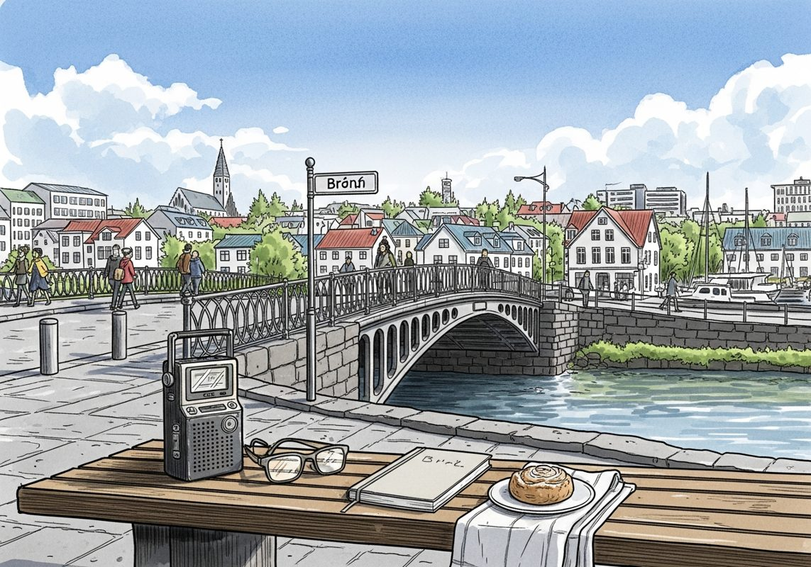

7/21

播客简报 2026-07-21
今日更新
WORLD CUP Bonus Episode: The Finals
来源：What now with Trevor Noah
状态：未读全文：需要音频转写
材料不足：这期需要 transcript 或更完整正文后再做全篇摘要。
- 当前只有节目简介或网页正文；这是播客音频，必须获取 transcript 后才算读完整期。
历史精选
Altimeter (with Brad Gerstner)
来源：Acquired
状态：已读音频详细听记
本期播客深入探讨了Altimeter Capital创始人Brad Gerstner非凡的创业与投资旅程，揭示了其独特的“跨界投资”模式如何融合对冲基金与风险投资，以及他如何以创始人视角重塑资本市场。节目不仅适合寻求创新投资策略的专业人士，也适合对科技创业、资本市场演变及社会财富分配有兴趣的普通读者。
- 创业与投资的启蒙：从家族风险到政治抉择：Brad Gerstner的成长深受家族创业经历影响，父亲在经济困境中为信守承诺而背负巨债，最终失去一切，这让他对创业风险有了深刻体会。祖父则明确反对子孙创业，鼓励成为专业人士。Brad早年曾尝试政治生涯，在牛津大学学习后为参议员Dick Lugar工作，并担任印第安纳州副州务卿。然而，他对为个人政治前途不断筹款感到厌恶，加之家庭曾为金钱挣扎的背景，促使他决定转向商界，进入哈佛商学院，寻求通过商业创造价值。高中时期在房车公司为创始人Pete Ligel工作的经历，也为他日后的创业和投资生涯埋下了伏笔。
- 互联网浪潮中的早期探索与“跨界”萌芽：在互联网泡沫时期进入哈佛商学院，Brad目睹了学生们对创业的狂热。他凭借对互联网的敏锐嗅觉，与朋友共同创办了在线旅游公司NLG，旨在为Expedia等提供类似Shopify的基础设施。NLG在短时间内取得成功，并最终被Barry Diller领导的IAC/Expedia收购。这次经历让Brad深刻理解到，互联网泡沫破裂并非需求消失，而是投机性资产的崩溃。他开始构思一种不区分公开市场和私人市场的“跨界投资”模式，认为真正的“伟大投资”不应受限于公司上市与否，这与巴菲特等传奇投资者的理念不谋而合。
- Altimeter Capital的诞生：逆势而上与导师指引：在决定专注于投资后，Brad得到了Rich Barton（Zillow创始人）的关键指引，Rich认为他更适合做投资者，关注“概率分布”而非“可能性”。随后，Brad在Paul Reader（Park Capital创始人）门下学习，深化了对冲基金的运作和“本质主义”投资理念——即专注于少数高信念投资。2008年金融危机爆发，世界经济面临崩溃边缘，Brad却在此时逆势创立了Altimeter Capital。尽管面临巨大质疑和资金匮乏，他凭借清晰的愿景和导师的信任，以极低的成本起步，并成功投资了Priceline等公司，为Altimeter的未来奠定了基础。
- “创始人视角”的跨界投资哲学与Snowflake案例：Altimeter的独特之处在于其“创始人视角”的跨界投资哲学。Brad认为，作为一名连续创业者，他能更深刻地理解创始人的需求和挑战。在云计算早期，市场普遍持悲观态度，认为客户数据安全是巨大障碍。但Altimeter通过深入研究，预见到数据爆炸和数据库市场将被云端重塑的趋势。他们对Snowflake的早期投资（C轮，估值1.75亿美元）正是基于这种非共识的洞察，最终获得了惊人的回报，Snowflake市值一度突破千亿美元。Altimeter强调长期持有、与创始人建立深厚信任，并提供超越资本的价值，这成为其核心竞争力。
- Altimeter的创新模式与Lagora的惊人增长：Altimeter Capital开创性地同时运营对冲基金和风险投资业务，旨在成为覆盖公司整个生命周期的投资者。他们不仅在私人市场投资，也积极参与和塑造公开市场上市方式，包括传统IPO、直接上市（如Roblox）和SPAC（如Grab），致力于“去神秘化”上市过程，为创始人提供更多选择和专业指导。此外，Altimeter还展示了其内部孵化能力，例如AI法律工具Lagora。通过深入律师事务所观察工作流程，Lagora开发出表格化审查等创新功能，在短短18个月内将年经常性收入（ARR）从100万美元增长到1亿美元，拥有超过10万律师用户，彰显了Altimeter“从零开始构建”的强大实力。
Gregorys Coffee: From Bean to Dream - [Business Breakdowns, EP.186]
来源：Business Breakdowns
原链接：https://joincolossus.com/episode/gregorys/
状态：已读网页 transcript
这期播客深入探讨了Gregorys Coffee如何在竞争激烈的纽约咖啡市场中，通过坚持高品质、优化客户体验并有效利用技术，从家族餐饮背景起步，逐步发展壮大并成功扩张的故事。它适合所有对餐饮创业、品牌差异化和规模化增长策略感兴趣的听众。
- 家族传承与咖啡梦想的萌芽：Gregory Zamfotis的成长环境深受家族餐饮业的影响，他的父亲是一位成功的餐馆老板，这为他日后创业奠定了基础。耳濡目染之下，Gregory对餐饮运营和客户服务有了深刻理解。尽管最初他选择了法律专业，但内心对创业的渴望和对咖啡的热情最终促使他放弃了法律生涯，决定投身咖啡行业。他观察到纽约市场虽然咖啡店众多，但仍存在一个空白：既能提供高品质咖啡，又能兼顾都市快节奏生活所需的速度和便捷性的品牌。正是基于这一洞察，Gregorys Coffee的梦想开始萌芽，旨在打造一个融合精品咖啡体验与高效服务的独特品牌。
- 品质与速度的平衡：早期定位与差异化：Gregorys Coffee在创立之初就面临着如何在高度饱和的市场中脱颖而出的挑战。创始人Gregory Zamfotis意识到，仅仅提供好咖啡是不够的，还需要在速度和客户体验上做到极致。他们坚持采购和烘焙高品质的咖啡豆，确保每一杯咖啡的风味。同时，为了满足纽约客对效率的需求，Gregorys Coffee在门店设计、员工培训和运营流程上都进行了优化，力求在保证品质的前提下，尽可能缩短顾客的等待时间。这种“品质不妥协，速度不牺牲”的策略，成为了Gregorys Coffee区别于传统精品咖啡店和大型连锁咖啡店的关键差异点，帮助他们在早期迅速积累了口碑和忠实顾客。
- 规模化扩张的挑战与策略：从一家店到多店连锁，Gregorys Coffee经历了显著的增长挑战。最大的难题之一是如何在扩张过程中保持产品和服务的一致性。为了解决这个问题，他们投入大量精力建立标准化的运营流程、严格的员工培训体系和中央厨房模式，确保无论哪家门店，顾客都能享受到同样高品质的咖啡和体验。此外，选择合适的门店位置也至关重要，他们不仅关注人流量，更注重社区文化和品牌契合度。在扩张过程中，Gregorys Coffee也学会了如何平衡内部增长与外部合作，例如与Simon Property Group的战略合作，为其进入购物中心等新市场提供了宝贵的机会和资源，加速了品牌在纽约以外地区的布局。
- 品牌核心价值与市场竞争：Gregorys Coffee的核心使命是“让世界变得更美好，一杯咖啡开始”。这不仅仅是一句口号，更是指导其产品开发、客户服务和企业文化的核心价值观。他们深信，一杯精心制作的咖啡能够为顾客带来愉悦，进而影响他们的一天。在与星巴克等大型连锁品牌的竞争中，Gregorys Coffee并未盲目模仿，而是坚持走自己的路，专注于提供更个性化、更注重细节的精品咖啡体验。他们通过强调咖啡豆的来源、烘焙工艺以及咖啡师的专业技能，与大众市场形成差异。这种对品质和体验的执着，使得Gregorys Coffee在消费者心中树立了独特的品牌形象，即便面对巨头的竞争，也能保持强劲的增长势头。
- 技术赋能与客户体验的升级：在数字化时代，Gregorys Coffee积极拥抱技术，将其视为提升客户体验和运营效率的关键工具。他们推出了自己的忠诚度计划和移动点单应用，让顾客可以提前下单、支付，从而节省排队时间，极大地提升了便捷性。然而，技术应用并非一味追求效率，Gregorys Coffee也深知平衡线上点单与线下门店体验的重要性。他们努力确保即使是提前点单的顾客，在取餐时也能感受到门店的温度和咖啡师的专业服务。通过数据分析，他们不断优化忠诚度计划，为顾客提供个性化的优惠和推荐，进一步增强了客户粘性，将技术融入到品牌的核心价值中，而非简单地替代人际互动。